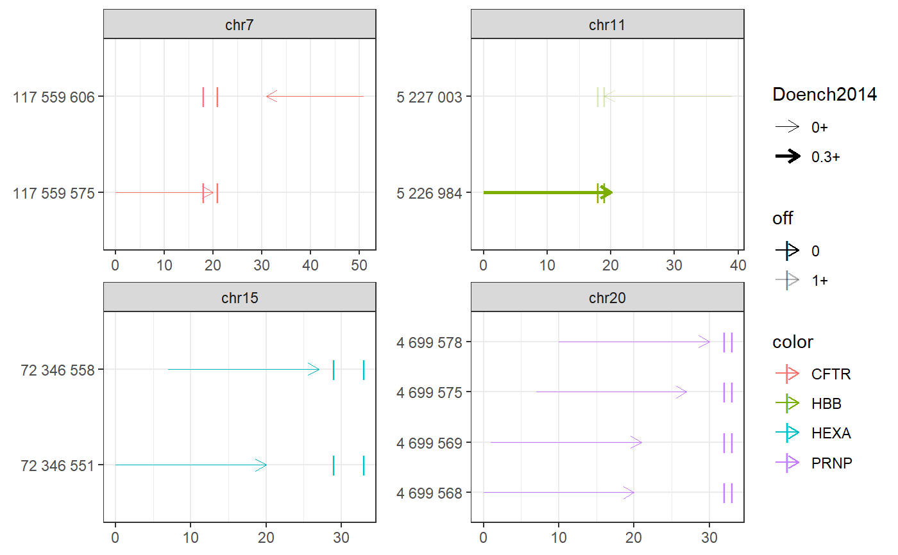

Find crispr spacers in targetranges
find_spacers.RdFind crispr spacers in targetranges
find_spacers( gr, bsgenome, spacer = strrep("N", 20), pam = "NGG", complement = TRUE, ontargetmethod = c("Doench2014", "Doench2016")[1], offtargetmethod = c("bowtie", "pdict")[1], offtargetfilterby = character(0), subtract_targets = FALSE, mismatches = 2, indexedgenomesdir = INDEXEDGENOMESDIR, outdir = OUTDIR, verbose = TRUE, plot = TRUE, ... )
Arguments
| gr | |
|---|---|
| bsgenome | |
| spacer | string: spacer pattern in extended IUPAC alphabet |
| pam | string: pam pattern in extended IUPAC alphabet |
| complement | TRUE (default) or FALSE: also search in compl ranges? |
| ontargetmethod | 'Doench2016' or 'Doench2016': on-target scoring method |
| offtargetmethod | 'bowtie' (default) or 'pdict' |
| offtargetfilterby | filter for best off-target counts by this variable |
| subtract_targets | TRUE or FALSE (default): whether to subtract target (mis)matches from offtarget counts |
| mismatches | 0-3: allowed mismatches in offtargetanalysis (choose mismatch=-1 to suppress offtarget analysis) |
| indexedgenomesdir | directory with Bowtie-indexed genomes
(as produced with |
| outdir | directory where bowtie analysis results are written to |
| verbose | TRUE (default) or FALSE |
| plot | TRUE (default) or FALSE |
| ... | passed to plot_intervals |
Value
See also
find_primespacers to find prime editing spacers
Examples
# PE example #----------- require(magrittr) bsgenome <- BSgenome.Hsapiens.UCSC.hg38::BSgenome.Hsapiens.UCSC.hg38 gr <- char_to_granges(c(PRNP = 'chr20:4699600:+', # snp HBB = 'chr11:5227002:-', # snp HEXA = 'chr15:72346580-72346583:-', # del CFTR = 'chr7:117559593-117559595:+'), # ins bsgenome) plot_intervals(gr)#>#>#>#>#>#>#>#>#>#>#>#>#>#>#>#>#>#>#>#>#>#>#>#>#>#>#>#>#>#>#>#>#>#>#>#>#>#>#>#>#>#>#>#>#>#> Warning: Removed 34 rows containing missing values (geom_point).#> Warning: Removed 34 rows containing missing values (geom_point).#> GRanges object with 10 ranges and 21 metadata columns: #> seqnames ranges strand | targetname targetstart #> <Rle> <IRanges> <Rle> | <character> <integer> #> CFTR_1 chr7 117559575-117559594 + | CFTR 117559593 #> CFTR_2 chr7 117559606-117559625 - | CFTR 117559593 #> HBB_1 chr11 5227003-5227022 - | HBB 5227002 #> HBB_2 chr11 5226984-5227003 + | HBB 5227002 #> HEXA_1 chr15 72346551-72346570 + | HEXA 72346580 #> HEXA_2 chr15 72346558-72346577 + | HEXA 72346580 #> PRNP_1 chr20 4699568-4699587 + | PRNP 4699600 #> PRNP_2 chr20 4699569-4699588 + | PRNP 4699600 #> PRNP_3 chr20 4699575-4699594 + | PRNP 4699600 #> PRNP_4 chr20 4699578-4699597 + | PRNP 4699600 #> targetend crisprname crisprspacer crisprpam crisprprimer #> <integer> <character> <character> <character> <character> #> CFTR_1 117559595 CFTR_1 ATTAAAGAAAATATCATCTT TGG AAGAAAATATCAT #> CFTR_2 117559595 CFTR_2 TCTGTATCTATATTCATCAT AGG TATCTATATTCAT #> HBB_1 5227002 HBB_1 CATGGTGCATCTGACTCCTG AGG GTGCATCTGACTC #> HBB_2 5227002 HBB_2 GTAACGGCAGACTTCTCCTC AGG CGGCAGACTTCTC #> HEXA_1 72346583 HEXA_1 TGTAGAAATCCTTCCAGTCA GGG GAAATCCTTCCAG #> HEXA_2 72346583 HEXA_2 ATCCTTCCAGTCAGGGCCAT AGG TTCCAGTCAGGGC #> PRNP_1 4699600 PRNP_1 AGCAGCTGGGGCAGTGGTGG GGG GCTGGGGCAGTGG #> PRNP_2 4699600 PRNP_2 GCAGCTGGGGCAGTGGTGGG GGG CTGGGGCAGTGGT #> PRNP_3 4699600 PRNP_3 GGGGCAGTGGTGGGGGGCCT TGG CAGTGGTGGGGGG #> PRNP_4 4699600 PRNP_4 GCAGTGGTGGGGGGCCTTGG CGG TGGTGGGGGGCCT #> crisprtranscript crisprextension #> <character> <character> #> CFTR_1 CTTTGGTGTTTCCTAT ATAGGAAACACCAAAGATGATATTTTCTT #> CFTR_2 CATAGGAAACACCAAA TTTGGTGTTTCCTATGATGAATATAGATA #> HBB_1 CTGAGGAGAAGTCTGC GCAGACTTCTCCTCAGGAGTCAGATGCAC #> HBB_2 CTCAGGAGTCAGATGC GCATCTGACTCCTGAGGAGAAGTCTGCCG #> HEXA_1 TCAGGGCCATAGGATA TATCCTATGGCCCTGACTGGAAGGATTTC #> HEXA_2 CATAGGATATACGGTT AACCGTATATCCTATGGCCCTGACTGGAA #> PRNP_1 TGGGGGGCCTTGGCGG CCGCCAAGGCCCCCCACCACTGCCCCAGC #> PRNP_2 GGGGGGCCTTGGCGGC GCCGCCAAGGCCCCCCACCACTGCCCCAG #> PRNP_3 CCTTGGCGGCTACATG CATGTAGCCGCCAAGGCCCCCCACCACTG #> PRNP_4 TGGCGGCTACATGCTG CAGCATGTAGCCGCCAAGGCCCCCCACCA #> crisprextrange off off0 Doench2014 #> <character> <numeric> <numeric> <numeric> #> CFTR_1 chr7:117559579-117559607:- 0 0 0.03399990 #> CFTR_2 chr7:117559593-117559621:+ 0 0 0.22337056 #> HBB_1 chr11:5226990-5227018:+ 1 1 0.13111422 #> HBB_2 chr11:5226988-5227016:- 0 0 0.41398065 #> HEXA_1 chr15:72346555-72346583:- 0 0 0.10728361 #> HEXA_2 chr15:72346562-72346590:- 0 0 0.03942528 #> PRNP_1 chr20:4699572-4699600:- 0 0 0.00994899 #> PRNP_2 chr20:4699573-4699601:- 0 0 0.04496627 #> PRNP_3 chr20:4699579-4699607:- 0 0 0.00996254 #> PRNP_4 chr20:4699582-4699610:- 0 0 0.20935863 #> nickrange #> <character> #> CFTR_1 chr7:117559646-117559665:- #> CFTR_2 chr7:117559506-117559525:+ #> HBB_1 chr11:5226916-5226935:+;chr11:5226917-5226936:+ #> HBB_2 <NA> #> HEXA_1 chr15:72346621-72346640:-;chr15:72346628-72346647:-;chr15:72346632-72346651:-;chr15:72346647-72346666:- #> HEXA_2 chr15:72346621-72346640:-;chr15:72346628-72346647:-;chr15:72346632-72346651:-;chr15:72346647-72346666:- #> PRNP_1 chr20:4699632-4699651:-;chr20:4699633-4699652:-;chr20:4699664-4699683:- #> PRNP_2 chr20:4699632-4699651:-;chr20:4699633-4699652:-;chr20:4699664-4699683:- #> PRNP_3 chr20:4699632-4699651:-;chr20:4699633-4699652:-;chr20:4699664-4699683:- #> PRNP_4 chr20:4699632-4699651:-;chr20:4699633-4699652:-;chr20:4699664-4699683:- #> nickspacer #> <character> #> CFTR_1 AGTTTCTTACCTCTTCTAGT #> CFTR_2 GAGGGTAAAATTAAGCACAG #> HBB_1 ACCTTGATACCAACCTGCCC;CCTTGATACCAACCTGCCCA #> HBB_2 <NA> #> HEXA_1 TGGTCACCAAGGCCGGCTTC;CTGGAACTGGTCACCAAGGC;GGAGCTGGAACTGGTCACCA;AGTGAACTATATGAAGGAGC #> HEXA_2 TGGTCACCAAGGCCGGCTTC;CTGGAACTGGTCACCAAGGC;GGAGCTGGAACTGGTCACCA;AGTGAACTATATGAAGGAGC #> PRNP_1 TCACTGCCGAAATGTATGAT;GTCACTGCCGAAATGTATGA;GCATGTTTTCACGATAGTAA #> PRNP_2 TCACTGCCGAAATGTATGAT;GTCACTGCCGAAATGTATGA;GCATGTTTTCACGATAGTAA #> PRNP_3 TCACTGCCGAAATGTATGAT;GTCACTGCCGAAATGTATGA;GCATGTTTTCACGATAGTAA #> PRNP_4 TCACTGCCGAAATGTATGAT;GTCACTGCCGAAATGTATGA;GCATGTTTTCACGATAGTAA #> nickpam nickoff nickoff0 nickoff1 nickoff2 #> <character> <character> <character> <character> <character> #> CFTR_1 TGG 0 0 0 0 #> CFTR_2 TGG 0 0 0 0 #> HBB_1 AGG;GGG 1;1 1;1 0;0 0;0 #> HBB_2 <NA> <NA> <NA> <NA> <NA> #> HEXA_1 CGG;CGG;AGG;TGG 0;0;0;0 0;0;0;0 0;0;0;0 0;0;0;0 #> HEXA_2 CGG;CGG;AGG;TGG 0;0;0;0 0;0;0;0 0;0;0;0 0;0;0;0 #> PRNP_1 GGG;TGG;CGG 0;0;0 0;0;0 0;0;0 0;0;0 #> PRNP_2 GGG;TGG;CGG 0;0;0 0;0;0 0;0;0 0;0;0 #> PRNP_3 GGG;TGG;CGG 0;0;0 0;0;0 0;0;0 0;0;0 #> PRNP_4 GGG;TGG;CGG 0;0;0 0;0;0 0;0;0 0;0;0 #> nickDoench2014 #> <character> #> CFTR_1 0.38 #> CFTR_2 0.49 #> HBB_1 0.06;0.42 #> HBB_2 <NA> #> HEXA_1 0.01;0.05;0.32;0.2 #> HEXA_2 0.01;0.05;0.32;0.2 #> PRNP_1 0.14;0.32;0.52 #> PRNP_2 0.14;0.32;0.52 #> PRNP_3 0.14;0.32;0.52 #> PRNP_4 0.14;0.32;0.52 #> ------- #> seqinfo: 595 sequences (1 circular) from hg38 genome#>#>#>#>#>#>#>#>#>#>#>#>#>#>#>#>#>#>#>#> GRanges object with 10 ranges and 9 metadata columns: #> seqnames ranges strand | targetname targetstart #> <Rle> <IRanges> <Rle> | <character> <integer> #> CFTR_f chr7 117559575-117559594 + | CFTR 117559593 #> CFTR_r chr7 117559606-117559625 - | CFTR 117559593 #> HBB_f chr11 5226984-5227003 + | HBB 5227002 #> HBB_r chr11 5227003-5227022 - | HBB 5227002 #> HEXA_f_1 chr15 72346551-72346570 + | HEXA 72346580 #> HEXA_f_2 chr15 72346558-72346577 + | HEXA 72346580 #> PRNP_f_1 chr20 4699568-4699587 + | PRNP 4699600 #> PRNP_f_2 chr20 4699569-4699588 + | PRNP 4699600 #> PRNP_f_3 chr20 4699575-4699594 + | PRNP 4699600 #> PRNP_f_4 chr20 4699578-4699597 + | PRNP 4699600 #> targetend crisprname crisprspacer crisprpam off #> <integer> <character> <character> <character> <numeric> #> CFTR_f 117559595 CFTR_f ATTAAAGAAAATATCATCTT TGG 0 #> CFTR_r 117559595 CFTR_r TCTGTATCTATATTCATCAT AGG 0 #> HBB_f 5227002 HBB_f GTAACGGCAGACTTCTCCTC AGG 0 #> HBB_r 5227002 HBB_r CATGGTGCATCTGACTCCTG AGG 1 #> HEXA_f_1 72346583 HEXA_f_1 TGTAGAAATCCTTCCAGTCA GGG 0 #> HEXA_f_2 72346583 HEXA_f_2 ATCCTTCCAGTCAGGGCCAT AGG 0 #> PRNP_f_1 4699600 PRNP_f_1 AGCAGCTGGGGCAGTGGTGG GGG 0 #> PRNP_f_2 4699600 PRNP_f_2 GCAGCTGGGGCAGTGGTGGG GGG 0 #> PRNP_f_3 4699600 PRNP_f_3 GGGGCAGTGGTGGGGGGCCT TGG 0 #> PRNP_f_4 4699600 PRNP_f_4 GCAGTGGTGGGGGGCCTTGG CGG 0 #> off0 Doench2014 #> <numeric> <numeric> #> CFTR_f 0 0.03399990 #> CFTR_r 0 0.22337056 #> HBB_f 0 0.41398065 #> HBB_r 1 0.13111422 #> HEXA_f_1 0 0.10728361 #> HEXA_f_2 0 0.03942528 #> PRNP_f_1 0 0.00994899 #> PRNP_f_2 0 0.04496627 #> PRNP_f_3 0 0.00996254 #> PRNP_f_4 0 0.20935863 #> ------- #> seqinfo: 595 sequences (1 circular) from hg38 genome# complement = FALSE because extend_for_pe already # adds reverse complements and does so in a strand-specific # manner # TFBS example #------------- bsgenome <- BSgenome.Mmusculus.UCSC.mm10::BSgenome.Mmusculus.UCSC.mm10 bedfile <- system.file('extdata/SRF.bed', package='multicrispr') gr <- bed_to_granges(bedfile, 'mm10') %>% extend()#>#>#>#>#>#>#>#>#>#>#>#>#>#>#>#>#>#>#>#>#>#>#>#>#>#>#>#>#>#>#>#>#>#>#>#>#>#>#>#>#> GRanges object with 517 ranges and 19 metadata columns: #> seqnames ranges strand | #> <Rle> <IRanges> <Rle> | #> chr1:4712628-4712643:-_r_5 chr1 4712619-4712638 - | #> chr1:4712628-4712643:-_r_4 chr1 4712620-4712639 - | #> chr1:4712628-4712643:-_r_3 chr1 4712627-4712646 - | #> chr1:4712628-4712643:-_r_2 chr1 4712633-4712652 - | #> chr1:4712628-4712643:-_r_1 chr1 4712634-4712653 - | #> ... ... ... ... . #> chr1:113368495-113368510:+_r chr1 113368487-113368506 - | #> chr1:113368495-113368510:+_f_1 chr1 113368485-113368504 + | #> chr1:113368495-113368510:+_f_2 chr1 113368492-113368511 + | #> chr1:113368495-113368510:+_f_3 chr1 113368499-113368518 + | #> chr1:113368495-113368510:+_f_4 chr1 113368500-113368519 + | #> targetname targetstart #> <character> <integer> #> chr1:4712628-4712643:-_r_5 chr1:4712628-4712643:- 4712628 #> chr1:4712628-4712643:-_r_4 chr1:4712628-4712643:- 4712628 #> chr1:4712628-4712643:-_r_3 chr1:4712628-4712643:- 4712628 #> chr1:4712628-4712643:-_r_2 chr1:4712628-4712643:- 4712628 #> chr1:4712628-4712643:-_r_1 chr1:4712628-4712643:- 4712628 #> ... ... ... #> chr1:113368495-113368510:+_r chr1:113368495-113368510:+ 113368495 #> chr1:113368495-113368510:+_f_1 chr1:113368495-113368510:+ 113368495 #> chr1:113368495-113368510:+_f_2 chr1:113368495-113368510:+ 113368495 #> chr1:113368495-113368510:+_f_3 chr1:113368495-113368510:+ 113368495 #> chr1:113368495-113368510:+_f_4 chr1:113368495-113368510:+ 113368495 #> targetend crisprname #> <integer> <character> #> chr1:4712628-4712643:-_r_5 4712643 chr1:4712628-4712643:-_r_5 #> chr1:4712628-4712643:-_r_4 4712643 chr1:4712628-4712643:-_r_4 #> chr1:4712628-4712643:-_r_3 4712643 chr1:4712628-4712643:-_r_3 #> chr1:4712628-4712643:-_r_2 4712643 chr1:4712628-4712643:-_r_2 #> chr1:4712628-4712643:-_r_1 4712643 chr1:4712628-4712643:-_r_1 #> ... ... ... #> chr1:113368495-113368510:+_r 113368510 chr1:113368495-113368510:+_r #> chr1:113368495-113368510:+_f_1 113368510 chr1:113368495-113368510:+_f_1 #> chr1:113368495-113368510:+_f_2 113368510 chr1:113368495-113368510:+_f_2 #> chr1:113368495-113368510:+_f_3 113368510 chr1:113368495-113368510:+_f_3 #> chr1:113368495-113368510:+_f_4 113368510 chr1:113368495-113368510:+_f_4 #> crisprspacer crisprpam name #> <character> <character> <character> #> chr1:4712628-4712643:-_r_5 ATATAAGGGCATTGGAAGAA GGG SRF_MA0083.3 #> chr1:4712628-4712643:-_r_4 AATATAAGGGCATTGGAAGA AGG SRF_MA0083.3 #> chr1:4712628-4712643:-_r_3 TGGAGACAATATAAGGGCAT TGG SRF_MA0083.3 #> chr1:4712628-4712643:-_r_2 TTCTGCTGGAGACAATATAA GGG SRF_MA0083.3 #> chr1:4712628-4712643:-_r_1 CTTCTGCTGGAGACAATATA AGG SRF_MA0083.3 #> ... ... ... ... #> chr1:113368495-113368510:+_r CTTATATTGTCTCCAGCAGA AGG SRF_MA0083.3 #> chr1:113368495-113368510:+_f_1 CTTCTGCTGGAGACAATATA AGG SRF_MA0083.3 #> chr1:113368495-113368510:+_f_2 TGGAGACAATATAAGGACAT TGG SRF_MA0083.3 #> chr1:113368495-113368510:+_f_3 AATATAAGGACATTGGAAGA AGG SRF_MA0083.3 #> chr1:113368495-113368510:+_f_4 ATATAAGGACATTGGAAGAA GGG SRF_MA0083.3 #> score G0 G1 G2 #> <numeric> <integer> <integer> <integer> #> chr1:4712628-4712643:-_r_5 10.4954 7 2473 356 #> chr1:4712628-4712643:-_r_4 10.4954 7 2328 512 #> chr1:4712628-4712643:-_r_3 10.4954 7 2358 392 #> chr1:4712628-4712643:-_r_2 10.4954 8 4 5 #> chr1:4712628-4712643:-_r_1 10.4954 1678 1083 198 #> ... ... ... ... ... #> chr1:113368495-113368510:+_r 9.7378 1652 1069 204 #> chr1:113368495-113368510:+_f_1 9.7378 1678 1083 198 #> chr1:113368495-113368510:+_f_2 9.7378 2353 393 199 #> chr1:113368495-113368510:+_f_3 9.7378 2324 492 622 #> chr1:113368495-113368510:+_f_4 9.7378 2468 350 97 #> T0 T1 T2 off #> <integer> <integer> <integer> <integer> #> chr1:4712628-4712643:-_r_5 1 49 3 2783 #> chr1:4712628-4712643:-_r_4 1 47 4 2795 #> chr1:4712628-4712643:-_r_3 1 49 2 2705 #> chr1:4712628-4712643:-_r_2 1 0 0 16 #> chr1:4712628-4712643:-_r_1 44 9 2 2904 #> ... ... ... ... ... #> chr1:113368495-113368510:+_r 44 9 1 2871 #> chr1:113368495-113368510:+_f_1 44 9 2 2904 #> chr1:113368495-113368510:+_f_2 49 3 2 2891 #> chr1:113368495-113368510:+_f_3 47 5 0 3386 #> chr1:113368495-113368510:+_f_4 49 4 0 2862 #> off0 off1 off2 Doench2014 #> <integer> <integer> <integer> <numeric> #> chr1:4712628-4712643:-_r_5 6 2424 353 0.16491179 #> chr1:4712628-4712643:-_r_4 6 2281 508 0.00721485 #> chr1:4712628-4712643:-_r_3 6 2309 390 0.12161212 #> chr1:4712628-4712643:-_r_2 7 4 5 0.16315246 #> chr1:4712628-4712643:-_r_1 1634 1074 196 0.07629138 #> ... ... ... ... ... #> chr1:113368495-113368510:+_r 1608 1060 203 0.0872713 #> chr1:113368495-113368510:+_f_1 1634 1074 196 0.1412653 #> chr1:113368495-113368510:+_f_2 2304 390 197 0.1200911 #> chr1:113368495-113368510:+_f_3 2277 487 622 0.0139888 #> chr1:113368495-113368510:+_f_4 2419 346 97 0.4236408 #> ------- #> seqinfo: 66 sequences (1 circular) from mm10 genome